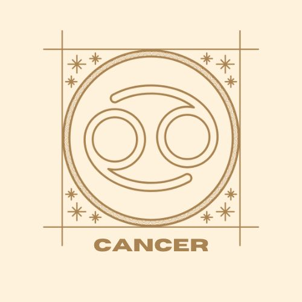
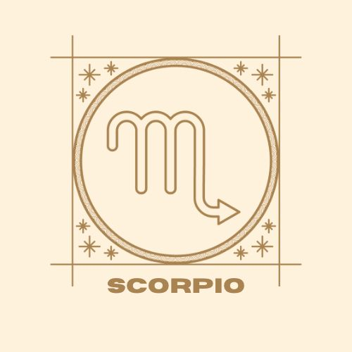
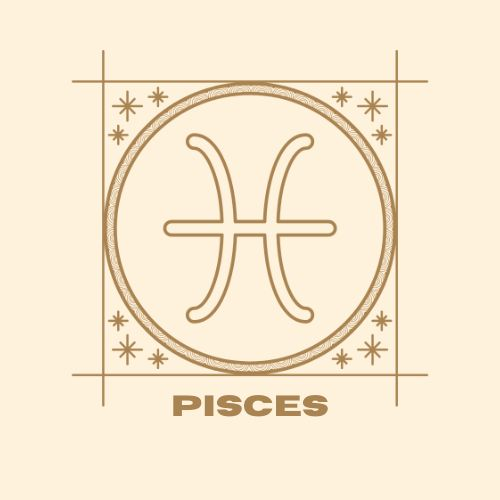
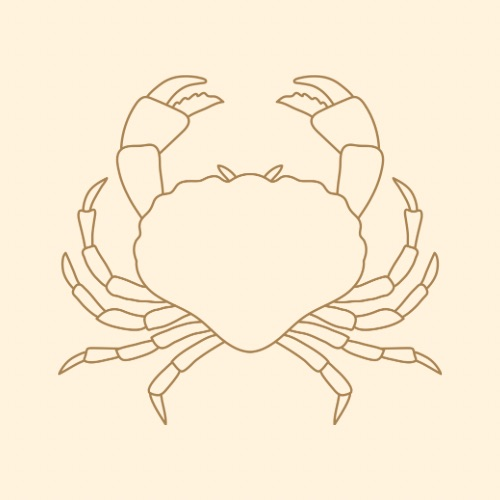
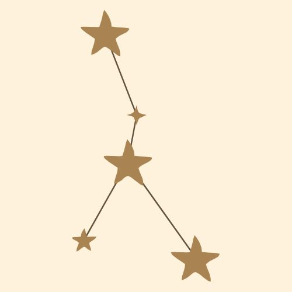
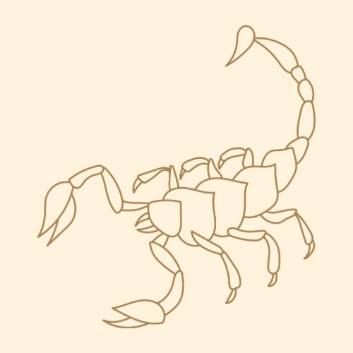
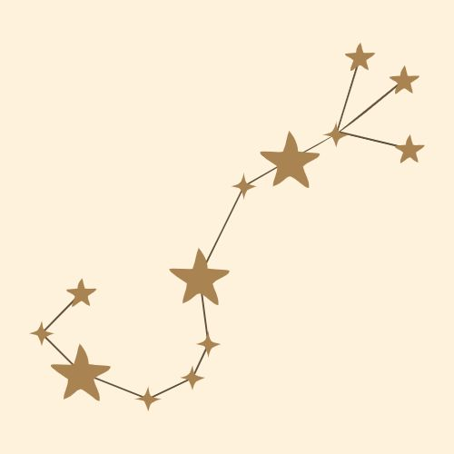
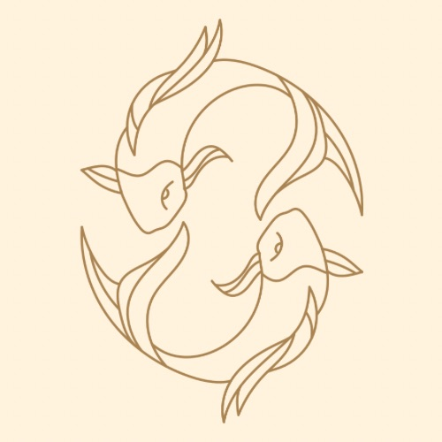

Scroll or select a sign by clicking on the images below to learn more!
  
CancerThe CrabJune 21 - July 21 A Cancer’s personality is like wading chest deep in a lake of warm water. It feels sparkling and cool while you're in the shallow end, but you know that if you were to dive in, it would feel warm. The self-awareness of a Cancer is like the tides–constantly moving in and out of focus. Their personalities are layered. Cancers have many moods, some of which are contradictory, but they also have a deep, core self that persists. Cancers are weighed down by their own sorrows and the sorrows of those around them. They are frequently haunted by grief. It’s hard for them to share their pain with others, and they are often afraid to be vulnerable because they carry a fear that people will use their weaknesses against them. Cancers have learned to hide their pain to avoid burdening anyone else. They pretend they’re okay when they’re not. Their emotions are like an exposed nerve. Cancers can feel everything. They’re like a tuning fork that vibrates at the slightest provocation. They tend to carry deep grudges because they can’t forget the emotional sting of even a slight. 
Back to top
scorpioThe ScorpionOctober 23 - November 21 A Scorpio's personality is a chasm of infinite complexity (or at least how they project themselves). They are difficult people to get to know because they are psychological trap doors. Scorpios socialize from behind a double-sided mirror, always scanning, reading you while you can only see your own reflection. They prefer to be the people asking the questions, removing your skin with their perceptive scalpel and taking inventory of your pulsing viscera. They subtly probe and push your pressure points so they can get the answer they're seeking. Scorpios are keenly aware of power, its flows, and their position within its matrix. Despite their ability to be popular, there’s something very lonely about Scorpios. They have a ruthless view of the world. Eat or be eaten. Their knowledge of other people’s internal structures gives them an edge over the competition. They know how to play people against each other. Every human interaction is a meeting of opposing powerful forces. A clashing of wants and needs where somebody wins and somebody loses. They are forthcoming and evasive at the same time, depending on what is situationally beneficial. They are blunt, but not without tact. They are intentional about the information they reveal. They’re not liars, they don't spread lies, but they are masters of opening windows on certain truths while concealing others behind heavy curtains. 
Back to top
piscesThe FishesFebruary 18 - March 19 Describing a Pisces’ personality can be difficult because Pisces tend to evade distinction. Their behavior changes significantly based on who they’re around. Pisces are just permeable membranes that pensively let things flow through them. They are cerebral sea sponges. They are boundless, diluting themselves with larger personalities to avoid having to form coherent identities. Most of the qualities usually associated with Pisces (dreaminess, emotionality, imagination) are internal processes that are difficult to observe from the outside. Pisces are primarily inward-facing. They are not self-absorbed, but they are absorbed in themselves. Ultimately, a Pisces wants to dissolve. To wrest themselves of a physical form and diffuse into everything they touch as love. To exist in the gossamer liminal layer that hangs just barely above the material. To live their life like a romantic poem. To understand that reality and fantasy are neighbors on the same infinite plane.
Back to top
|